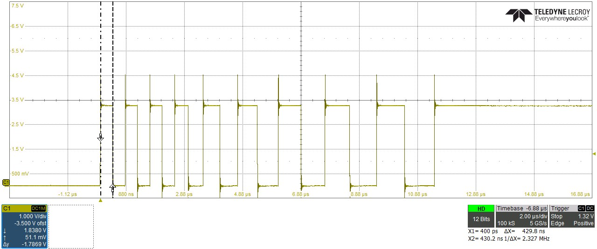
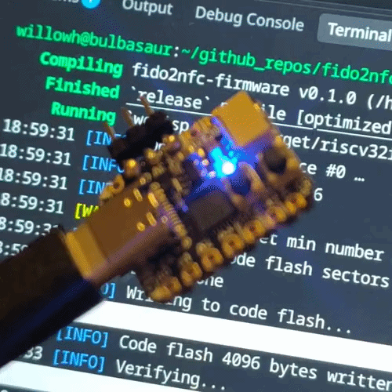
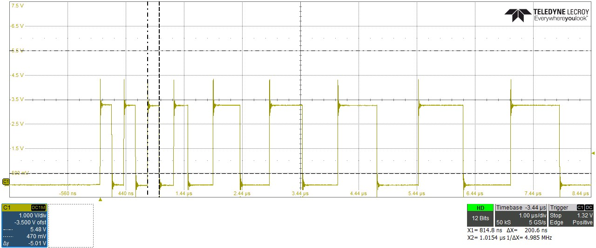

17th October 2026
I've been fortunate enough to have experimented with all sorts of languages on hosted platforms, having to maintain programs and apps written in Go, Kotlin and even PowerBASIC for work, I'm always conscious that the majority of my embedded programming has been in the safe havens of C and C++. This was probably born out of learning on arduinos back in the good old days of the Uno, then it being the primary language I learnt at university too. I like C, but many of the reasons I like it are also some of its biggest pitfalls. Not many other languages will let you map both a uint64 and array of byte variables to the same actualy memory space and let you tweak both of those simultaneously, and that's not necessarily a bad thing. I can't remember where I originally read this, but somewhere I saw a quote saying C is like a sharp kitchen knife. Extremely capable but you can cut yourself very easily with it. I've battered my head so many times against silent corruption bugs and weird memory things that languages like Rust appeal to me. I've got a fun project idea that spans a few of the domains I'm passionate about, and whilst I could probably very easily do it within my safe confines of Zephyr and STM or nRF platforms, I always want to try new things, and the CH32V203 and Rust sounded like a fun challenge
I've played with rust for the 2025 AOC, and spent some time going through the Rust book to get started on it, and in general quite enjoyed the process. Getting 5000 errors at compile time is frustrating but in general when the code compiles it does something, which is a nice change from C's crapshoot as to whether it'll just fail silently and weirdly. Embassy seems like the go to framework for using it on embedded platforms, and I'm very intrigued by the painless async loops, from the sounds of it you can get close to RTOS functionality without actually having to deal with the pain of setting up a full RTOS (don't get me wrong I love zephyr, but for simple projects it is quite the pain to get set up). Embassy has official HALs for most of the usual suspects, the nRFs, STM32 and RP2xxx microcontrollers as well as some more esoteric ones, and there's also unofficial HALs for other platforms like the ESP32, ch32 and some more quirky microcontrollers. I am a fan of the ch32, with V003s in several projects of mine, so I thought I'd step up to a fancier one, the V203. No more bitbang usb, this has an honest to god usb peripheral, and storage, and a USB bootloader, and up to 224kb of program storage (but more on that later). It's marked as the best supported in the ch32-hal, so i pulled the relevant crates and tried setting it up, how hard can it be right?
This feels way harder than it has any right to be, really not helped by a near complete absence of documentation. I'm sure this stuff is obvious to seasons rusticians but it felt like a deeply unnecessary hurdle to me and none of my frantic searching for "ch32-hal getting started" really turned up anything good. In a project folder you need to create 6 files before cargo will start doing its job, and there's also a massive trap that nobody mentions.
This is the project definition file, it has three sections. [project] defines the project name (the same as is generated when you run cargo new program-name), the version (i believe used if other people pull your crate) and the edition, which means the year release of rust it needs, not the year it was made , so it should be 2024. The next section is [dependencies] which as the name implies are all the crates you need to build your project, at a minimum you need the hal and the embassy executor nd a few other things, I basically just stole the dependencies from the example code in the ch32-hal Cargo.toml file then removed the ones i didn't need and added the ones I did. Crate dependencies can have "features", which can really alter their behavior. After the dependencies come the [profiles], which are basically the compiler flags for different build modes. I originally used the ones from the example code but changed them out later.
This is the equivalent of the .ld file, defining all the flash sectors and interupt handlers and things along those lines. This can be directly copied from the ch32-hal example code for your specific microcontroller without any issues.
This defines some architecture stuff, once again it can be copied from the example code, however note there are a few different variants depending on which microcontroller you're using as they use slightly different flavours of the RISC-V architecture
This has the specific sequence of commands required to build the actual firmware, it doesnt seem to be different microcontroller to microcontroller.
This has some build command and more importantly the flashing command. If you're using a debug adapter like the WCHlink-e then probe-rs is the best choice but it doesn't need to have support for the usb bootloader the adafruit ch32 board i'm using seems to use so I had to run cargo install wchisp and set runner = "wchisp flash" in config.toml
This is where your program all starts. There's a few mandatory bits you need, you have to start with
After I'd suffered through getting it working manually i found that cargo has a templating system called cargo-generate which can create the boilerplate starting point for you, you need a template available for your hal, which fortunately does exist for the ch32 hal, which can be found here. This uses the wlink runner which you may want to change to probe-rs or wchisp but other than that gets all these files made for you with much less effort than doing it manually.
Originally I tried the ws2812-rs library after it was the first one that showed up when i searched "WS2812 rust" on kagi. Turns out this may have been unwise as that library has very little uses, there wasn't a complete example that explained all the "use"s you needed to import to make it work so i tried a github code search and found one other public implementation of that driver. After importing things until the errors went away I was treated to the shining light of... nothing at all, the LED was completely black. I realised I'd misinterpreted the level command (Level::Low is actually active high) so i fixed that and then got blinded by the LED being full white. Changing the parameters didn't change the colour of the light at all it was always just retina smeltingly bright. At this point I started looking into the more common smart-leds crate, and trying someones supposedly working example code for my board and that changed the LED from blinding white to blinding green, when I wanted a dim red. Clearly some schenanigans were afoot.
Before needing to figure it out for this i'd never really appreciated how the WS2812 signals, i'd always just taken for granted that it worked with whatever random library i'd grab for whatever platform I was using, but it's a pretty interesting protocol. The LED Datasheet has all the information you need to figure it out. 1's and 0's are signalled by a high-low pulse with timings ~300ns high ~800ns low for a 0 and ~800ns high ~800ns low for a 1. You then assemble your RGB values into a a 24 bit collection in the order GRB, one collection for each led in the chain, then you send it out to the LED chain. The first LED shifts the bits into it's RGB controller, swallows the first 24 bit collection and forwards the rest out, and this continues until the chain has been exhausted, which is meant to be a max of 256 leds long, at which point the LEDs start repeating the first one. With this knowledge in mind it makes sense why timing issues can present with the LED being all white. If you can't signal fast enough to send a zero it gets interpreted as a 1, so you're sending a full chain of 1's and getting blasted in the eyeballs like an Audi is driving towards you at night
Since the bit banging driver depends on accurate timing to sub 1us i had a little look into the delay implementation figuring that may be the issue and oh boy did i find the issue. This line in ch32-hal explains why things were broken. In a decisino seemingly inherited from the rp2040 HAL delays, sub microsecond delays are treated as one microsecond. The delay_us handler then converts back down a bit when doing the systick timing. Whilst the 144MHz clocked systick timer would max out theoretically at 7ns resolution, that's a lot better than 1000ns and good enough for WS2812s.
One thing to keep in mind is that all the delay setup function calls, even simple maths operations like multiple and especially divide all take clock cycles, and each clock cycle is 7ns so I hacked together a pretty crude start and gave it a go, and it didn't work at all. I was still just getting the LED on full white brightness. Unfortunately it would not be as simple as first thought (I always think it will be and never learn my lesson) so it was time to crack out the actual measurement equipment and figure out what was actually happening.
I don't have any really fast measurement equipment at home, my scope says it's 100MHz bandwidth at 1GS but I do not believe that it's telling the truth, it was about 40 quid to be fair. My logic analyser maxes out at 100MHz sampling which would give 10ns resolution, and that's the best I had to hand so I switched my code to output square waves on an arbitrary pin and got to measuring. I set up a loop that would toggle the pin, then delay then toggle incrementing the delay each time in 50ns increments and the results were really interesting.
I had massively and completely underestimated the time taken for the setup of the delay. I suspect the additional delay was in the subtraction and timer setup operations but the slowest delay I could actually get out the thing was ~300ns. This is obviously cutting it a bit fine with the 300ns timing of WS2812s, but there was another problem, my very crude hacking to try and compensate for the delay setup time meant delays of less than 150ns would underflow an in t and panic the program. This could be addressed but added additional delays, slowing things down a little.

After forking and hacking around with the delay ws2812 driver too to turn the delay down but not all the way down that the "slow" feature did I was finally able to illuminate the LED, but I didn't wnt to maintain two crates, one of which had an inacurate delay and another that exploited that, so I redid some of my maths in the delay function such that a delay_ns call was a fairly faithful delay until 380ns when it just stopped decreasing. That was the best I could do and should be more than good enough. WS2812 bitbanging is about the only application I can think of that needs this sort of timing on a microcontroller this wimpy anyway.

Since my timing is just just barely acceptable sometimes it does fall out that window and there's a frame where the LED flashes bright white, this may be tweakable out with some minor optimisations in the HAL but for now i'm done with fiddling, 99% of the time it works every time and that's good enough for me.
Despite how tedious getting this working was I think I will stick with this for the project I have in mind, starting out into uncharted territories is always a bit frustrating and i'm just glad to have solved the issue. One thing that does surprise me coming from C is the number of crates you need for a basic ws2812 blinky. My program has a few additional unnecessarily crates that I know i'll need later on but still, 100 crates for a basic blinky with the ws2812 is quite a lot. it somewhat reminds me of the infamous left-pad incident, but maybe that's just the old crusty C programmer in my brain talking. The benefits of all these crates is other people have done the hard part for me, and I don't need to reimplement things.
The day after getting this all working I had a brainwave on the way to work, instead of wasting cycles setting up the systick counter for the really short delays I could just for loop for a bit to use those 7ns cpu cycles. I hooked my board up to the really fast scope at work and had a look at my original timing. The first thing i discovered was my 380ns delay was actually more like 420ns, and also the waveform was.... a bit iffy, but seems to work fine. My first attempt at a loop was using the rust spin_loop hint but that takes 50ns to execute so was throwing my timings way off. Then I used inline unsafed NOP operations which was somehow even worse???? I wonder if the jump to unsafe slowed it down or something. In the end I settled for there being two delays slower than 400ns, through the power of "just do some unnecessary maths lol" I managed to get a stable 250ns pulse and 200ns pulse, and that was good enough for me. the LED now never misses a beat and you should be able to bitbang 2.5MHz protocols now if you really wanted to.
